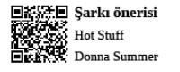

Spor Profesyonelleri
Kasları ile ayna ve sektör çatlatan profesyoneller
Spor, saatli maarif takviminin eskimiş yapraklarında; profesyonel, lisanslı olarak ya da amatör, sokaklarda gönüllü icra edilen bir kavram olarak yerini alırken, aynı takvim yapraklarında spor salonu kavramının karşılığı olarak da mahalle arası vücut geliştirme ve karate salonları yer alıyordu. Ortaokula başlayıp da apartman altı mahzen bozması karate salonunu ziyaret etmeyen adamdan sayılmazdı, öyleydi.